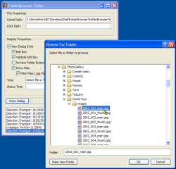

FolderBrowser Code (41K)
FolderBrowser Code (41K)
 8 Mar 2003
8 Mar 2003
First Posted

Folder Browser Dialog
Fully featured support for the Shell's Folder Browser, including file filtering
The Folder Browser dialog is one of the missing components from .NET Framework 1.0 - I believe it is included in v1.1 of the Framework. Until then however, this provides a full .NET implementation with support for every feature I could find, including the IFolderFilter interface, which allows the items shown in the Folder Browser to be filtered using regular expressions.
What Can You Do With It
Here's the code from the sample which demonstrates most of the functionality you'll want to use when using a Folder Browser:
using (FolderBrowser f = new FolderBrowser())
{
// Add events:
// Initialised is fired when the folder browser
// is first shown:
EventHandler initEventHandler = new EventHandler(
folderBrowser_Initialised);
f.Initialized += initEventHandler;
// Selection changed is fired whenever the
// selected folder changes:
SelectionChangedEventHandler selChangeEventHandler =
new SelectionChangedEventHandler(
folderBrowser_SelectionChanged);
f.SelectionChanged += selChangeEventHandler;
// Validation failed is fired if the EditBox
// and the ValidateEditBox properties are set,
// and the user types in an unknown file name.
ValidationFailedEventHandler validationFailedEventHandler =
new ValidationFailedEventHandler(
folderBrowser_ValidationFailed);
f.ValidationFailed += validationFailedEventHandler;
// Set main properties:
f.Title = this.txtTitle.Text;
f.StatusText = this.txtStatusText.Text;
f.NewDialogStyle = (this.chkNewDialog.Checked);
f.ShowEditBox = (this.chkEditBox.Checked);
f.ValidateEditBox = (this.chkValidateEditBox.Checked);
f.NoNewFolderButton = (this.chkNoNewFolder.Checked);
f.IncludeFiles = (this.chkIncludeFiles.Checked);
f.InitialPath = this.txtInitialPath.Text;
f.RootPath = this.txtRootPath.Text;
// Add a filter:
f.Filter.ApplyFilter = (this.chkFilter.Checked);
if (f.Filter.ApplyFilter)
{
// Filters are any regular expression and
// can be applied to either files or folders.
// Remember that some things appear as Shell
// folders even when they're not file folders,
// e.g. Zip files.
f.Filter.Items.Add(
new FileFilterSpecification(".jpg", true, false));
}
// Show the Dialog and get the result:
if (DialogResult.OK == f.ShowDialog(this))
{
txtSelection.Text = f.SelectedPath;
}
else
{
txtSelection.Text = "Dialog Cancelled";
}
// Done!
f.Initialized -= initEventHandler;
f.SelectionChanged -= selChangeEventHandler;
f.ValidationFailed -= validationFailedEventHandler;
} // Dispose f
Other things you can do include moving and sizing the dialog, creating a completely customised filter by overriding the ShouldFilter method.
Implementing The FolderBrowser
Behind any folder browser implementation is one API call with a simple structure to implement. The Shell's SHBrowseForFolder API takes a BrowseInfo structure and you can implement a minimal browser with very few lines of code:
public class SimpleFolderBrowse
{
[StructLayout(LayoutKind.Sequential)]
private struct BrowseInfo
{
public IntPtr hwndOwner;
public IntPtr pidlRoot;
[MarshalAs(UnmanagedType.LPTStr)]
public string displayname;
[MarshalAs(UnmanagedType.LPTStr)]
public string title;
public int flags;
[MarshalAs(UnmanagedType.FunctionPtr)]
public IntPtr callback;
public IntPtr lparam;
}
[DllImport("Shell32.dll", CharSet=CharSet.Auto)]
internal extern static System.IntPtr SHBrowseForFolder(
ref BrowseInfo bi);
private string folder = null;
public string Folder
{
get
{
return this.folder;
}
}
public DialogResult ShowBasicDialog(
System.Windows.Forms.IWin32Window owner)
{
BrowseInfo bi = new BrowseInfo();
bi.hwndOwner = owner.Handle;
bi.title = "Choose Folder";
bi.displayname = new string('\0', 260);
if (SHBrowseForFolder(ref bi) != IntPtr.Zero)
{
folder = bi.displayname;
return DialogResult.OK;
}
else
{
return DialogResult.Cancel;
}
}
}
However, there's plenty more options to investigate. The main interesting features are:
- Modifying the Dialog Options
- Setting Root and Initial Paths
- Connecting a File Filter
I'll cover these in turn.
1. Modifying Dialog Options
The flags member of the BrowseInfo structure provides a number of options which allow you to modify the appearance and functionality of the basic folder browser dialog:
[Flags]
private enum BrowseFlags : int
{
// Only return file system directories:
BIF_RETURNONLYFSDIRS = 0x0001,
// When looking at Network computers, don't
// go down to the share level:
BIF_DONTGOBELOWDOMAIN = 0x0002,
// Show a status text box as well as a title:
BIF_STATUSTEXT = 0x0004,
// Gray the ok button when a non-file system
// item is selected:
BIF_RETURNFSANCESTORS = 0x0008,
// Show an Edit box to allow the user to type
// a file name:
BIF_EDITBOX = 0x0010,
// Cause the Browse Folder to callback when
// the user clicks OK but invalid text is in
// the edit box:
BIF_VALIDATE = 0x0020,
// Make the dialog appear with the new UI style:
// a resizable dialog with drag-drop, ordering,
// shortcut menus, new folder button, ability to
// delete folders.
BIF_NEWDIALOGSTYLE = 0x0040,
// Allow URLs to be selected. BIF_NEWDIALOGSTYLE,
// BIF_BROWSEINCLUDEFILES and BIF_EDITBOX must
// also be set for this to work.
BIF_BROWSEINCLUDEURLS = 0x0080,
// Replace the text box with a user interface usage
// hint (only if BIF_EDITBOX not set)
BIF_UAHINT = 0x0100,
// Don't show the New Folder button when the new
// dialog style is being used:
BIF_NONEWFOLDERBUTTON = 0x0200,
// Browse for computers; if anything else selected,
// the dialog can't be OKed.
BIF_BROWSEFORCOMPUTER = 0x1000,
// Browse for printers; if anything else selected,
// the dialog can't be OKed.
BIF_BROWSEFORPRINTER = 0x2000,
// Include files in a New Style dialog:
BIF_BROWSEINCLUDEFILES = 0x4000,
// Shareable resources on remote systems are
// included:
BIF_SHAREABLE = 0x8000,
}
2. Setting Root and Initial Paths
In order to work more closely with the dialog, you need to do two things: firstly, install a callback procedure to receive notifications of events in the dialog and secondly to be able to translate paths to and from the unfortunately named "Pidls" (Pointer to ID Lists).
2.1 Installing a Callback Procedure
The callback procedure itself is a function with the following signature:
private int BrowseCallbackProc(
IntPtr hwnd,
int msg,
IntPtr lParam,
IntPtr lpData
)
{
}
To install the callback, create this function and then create a Delegate for it. Then modify the BrowseInfo structure so the callback parameter is of the Delegate's type:
private delegate int BrowseCallBackProc(
IntPtr hwnd,
int msg,
IntPtr lp,
IntPtr wp);
[StructLayout(LayoutKind.Sequential)]
private struct BrowseInfo
{
public IntPtr hwndOwner;
public IntPtr pidlRoot;
[MarshalAs(UnmanagedType.LPTStr)]
public string displayname;
[MarshalAs(UnmanagedType.LPTStr)]
public string title;
public int flags;
[MarshalAs(UnmanagedType.FunctionPtr)]
public BrowseInfo callback;
public IntPtr lparam;
}
When calling the dialog, you can then specify the delegate when setting up the BrowseInfo structure:
BrowseInfo bi = new BrowseInfo();
..
bi = new BrowseCallBackProc(this.BrowseCallbackProc);
..
The dialog then sends the following messages to the callback procedure:
- BFFM_INITIALIZED when the dialog is first created. You can use this message to select an initial folder.
- BFFM_SELCHANGED whenever the selected folder changes.
- BFFM_VALIDATEFAILED if the BIF_VALIDATE flag is set and the TextBox has invalid text entered when the user OKs
- BFFM_IUNKNOWN when the Folder Browser's IUnknown interface is available, allowing you to install a custom file filter, as described in the next section.
In order to set the root folder, or to easily change the selected path, you need to be able to translate file and folder names to Pidls. There are a variety of Shell APIs which allow you to do this, but the one supported on most OS varieties is to use the IShellFolder COM interface, which provides a ParseDisplayName function that converts a path to a Pidl.
To implement this, you need to do three things:
- An IShellFolder interface you can use (which means also having an IEnumIDList interface).
- An IMalloc interface to allow the memory associated with Pidls to be freed
- API declares to obtain actual instances of IShellFolder and IMalloc
2.1 Implementing IShellFolder, IEnumIDList and IMalloc
These interfaces are provided in the Platform SDK; as usual you need to add a little decoration (or untidyness) to allow them to be used properly. The structures and enumerations associated with these interfaces are all available in the download so aren't reproduced here:
[ComImportAttribute()]
[GuidAttribute("000214F2-0000-0000-C000-000000000046")]
[InterfaceTypeAttribute(ComInterfaceType.InterfaceIsIUnknown)]
//helpstring("IEnumIDList interface")
private interface IEnumIDList
{
[PreserveSig]
int Next(
int celt,
ref IntPtr rgelt,
out int pceltFetched);
void Skip(
int celt);
void Reset();
void Clone(
ref IEnumIDList ppenum);
};
[ComImportAttribute()]
[GuidAttribute("000214E6-0000-0000-C000-000000000046")]
[InterfaceTypeAttribute(ComInterfaceType.InterfaceIsIUnknown)]
//helpstring("IShellFolder interface")
private interface IShellFolder
{
void ParseDisplayName(
IntPtr hwndOwner,
IntPtr pbcReserved,
[MarshalAs(UnmanagedType.LPWStr)] string lpszDisplayName,
out int pchEaten,
out IntPtr ppidl,
out int pdwAttributes);
void EnumObjects(
IntPtr hwndOwner,
[MarshalAs(UnmanagedType.U4)] ESHCONTF grfFlags,
ref IEnumIDList ppenumIDList
);
void BindToObject(
IntPtr pidl,
IntPtr pbcReserved,
ref Guid riid,
ref IShellFolder ppvOut);
void BindToStorage(
IntPtr pidl,
IntPtr pbcReserved,
ref Guid riid,
IntPtr ppvObj
);
[PreserveSig]
int CompareIDs(
IntPtr lParam,
IntPtr pidl1,
IntPtr pidl2);
void CreateViewObject(
IntPtr hwndOwner,
ref Guid riid,
IntPtr ppvOut);
void GetAttributesOf(
int cidl,
[MarshalAs(UnmanagedType.LPArray, SizeParamIndex=0)]
IntPtr[] apidl,
[MarshalAs(UnmanagedType.U4)] ref ESFGAO rgfInOut);
void GetUIObjectOf(
IntPtr hwndOwner,
int cidl,
ref IntPtr apidl,
ref Guid riid,
out int prgfInOut,
ref IUnknown ppvOut);
void GetDisplayNameOf(
IntPtr pidl,
[MarshalAs(UnmanagedType.U4)] ESHGDN uFlags,
ref STRRET_CSTR lpName);
void SetNameOf(
IntPtr hwndOwner,
IntPtr pidl,
[MarshalAs(UnmanagedType.LPWStr)] string lpszName,
[MarshalAs(UnmanagedType.U4)] ESHCONTF uFlags,
ref IntPtr ppidlOut);
};
[ComImportAttribute()]
[GuidAttribute("00000002-0000-0000-C000-000000000046")]
[InterfaceTypeAttribute(ComInterfaceType.InterfaceIsIUnknown)]
//helpstring("IMalloc interface")
private interface IMalloc
{
[PreserveSig]
IntPtr Alloc(int cb);
[PreserveSig]
IntPtr Realloc(
IntPtr pv,
int cb);
[PreserveSig]
void Free(IntPtr pv);
[PreserveSig]
int GetSize(IntPtr pv);
[PreserveSig]
int DidAlloc(IntPtr pv);
[PreserveSig]
void HeapMinimize();
};
2.2 API Calls To Obtain IShellFolder and IMalloc interfaces
Whew. After that nastiness its a whole lot easier to actually get hold of the objects which do this:
[DllImport("shell32", CharSet = CharSet.Auto)]
internal extern static int SHGetMalloc(out IMalloc ppMalloc);
[DllImport("shell32", CharSet = CharSet.Auto)]
internal extern static int SHGetDesktopFolder(out IShellFolder ppshf);
2.3 Using IShellFolder and IMalloc to Work with Pidls
You're now in a position to start actually generating Pidls. To avoid writing the same code a lot, I've wrapped this work into a couple of classes: SafePidl for Pidls and Allocator for IMalloc. The Allocator class is a bit poorly named since it only concerns itself with freeing memory, but in any case here's the implementation:
public class Allocator : IDisposable
{
private static IMalloc alloc = null;
private static bool disposed = false;
/// <summary>
/// Frees the specified memory (if allocated by the
/// Shell).
/// </summary>
/// <param name="ptr">Pointer to memory to free</param>
public static void Free(IntPtr ptr)
{
if (!disposed)
{
if (alloc == null)
{
UnManagedMethods.SHGetMalloc(out alloc);
}
if (alloc != null)
{
try
{
alloc.Free(ptr);
}
catch (Exception ex)
{
Console.WriteLine("Problem {0}", ex.Message);
}
}
}
}
/// <summary>
/// Frees the reference to the Shell's IMalloc object
/// </summary>
public void Dispose()
{
Dispose(true);
GC.SuppressFinalize(this);
}
/// <summary>
/// Frees the reference to the SHell's IMalloc object
/// when disposing is true.
/// </summary>
/// <param name="disposing"></param>
protected virtual void Dispose(bool disposing)
{
if (disposing)
{
if (!disposed)
{
if (alloc != null)
{
Marshal.ReleaseComObject(alloc);
alloc = null;
}
disposed = true;
}
}
}
}
This class provides an easy to use wrapper for freeing Pidls in the SafePidl class, which provides functions for translating paths to Pidls and vice-versa:
public class SafePidl : IDisposable
{
private IntPtr pidl = IntPtr.Zero;
private bool shouldFree = true;
/// <summary>
/// Returns the Pointer to ID List for this object.
/// </summary>
public IntPtr Pidl
{
get
{
return pidl;
}
}
/// <summary>
/// Returns the path name for this Pidl
/// </summary>
public string Path
{
get
{
StringBuilder path = new StringBuilder(260, 260);
UnManagedMethods.SHGetPathFromIDList(pidl, path);
return path.ToString();
}
}
private IntPtr PathToPidl(string path)
{
IntPtr newPidl = IntPtr.Zero ;
IShellFolder ishFolder = null;
if (UnManagedMethods.SHGetDesktopFolder(
out ishFolder) == 0) // S_OK
{
// we have it:
int cParsed = 0;
int afItem = 0;
ishFolder.ParseDisplayName(
IntPtr.Zero,
IntPtr.Zero,
path,
out cParsed,
out newPidl,
out afItem);
Marshal.ReleaseComObject(ishFolder);
}
return newPidl;
}
/// <summary>
/// Enables the Pidl to be freed.
/// </summary>
public void Dispose()
{
Dispose(true);
GC.SuppressFinalize(this);
}
/// <summary>
/// Enables the Pidl to be freed when disposing is true.
/// </summary>
/// <param name="disposing">Whether disposing or not</param>
protected virtual void Dispose(bool disposing)
{
if (disposing)
{
if (pidl != IntPtr.Zero)
{
if (shouldFree)
{
Allocator.Free(pidl);
}
}
pidl = IntPtr.Zero;
}
}
internal SafePidl(IntPtr pidl, bool shouldFree)
{
this.pidl = pidl;
this.shouldFree = shouldFree;
}
/// <summary>
/// Constructs a new Pidl for the specified path
/// </summary>
/// <param name="path">Path to get Pidl for</param>
public SafePidl(string path)
{
if (path.Length > 0)
{
if (System.IO.Directory.Exists(path))
{
this.pidl = PathToPidl(path);
}
else
{
throw new System.IO.DirectoryNotFoundException(
String.Format("The path {0} could not be found.", path));
}
}
}
}
After that, you're now in a position to set the root path of the Folder Browser and the initial path.
To set the root path, create a SafePidl object and apply this to the pidlRoot member of the BrowseInfo structure:
SafePidl pidlRoot = new SafePidl(rootPath); // ... bi.pidlRoot = pidlRoot.Pidl; // ... pidlRoot.Dispose();
To set the initial path, use the lparam member of the BrowseInfo structure to store the initial folder Pidl and then during the callback event you can tell the Folder Browser to select that path:
SafePidl pidlInitial = new SafePidl(initialPath);
// ...
bi.lparam = pidlInitial.Pidl;
// ...
pidlInitial.Dispose();
...
private int BrowseCallbackProc(
IntPtr hwnd,
int msg,
IntPtr lParam,
IntPtr lpData
)
{
switch (msg)
{
case BFFM_INITIALIZED:
if (lpData != IntPtr.Zero)
{
SendMessage(hwnd, BFFM_SETSELECTIONW, IntPtr.Zero, lpData);
}
break;
// ..
}
}
3. Connecting a File Filter
As noted before, the BFFM_IUNKNOWN notification event is sent to Folder Browsers with the New UI style under Windows XP systems. Using this notification you can install a file filter provided that you implement the IFolderFilterSite and IFolderFilter interfaces. These interfaces are documented in the Platform SDK in the file ShlObjIdl.idl. Transcoding the IDL from these files to a COM Interop version, you get something like this:
[ComImportAttribute()]
[GuidAttribute("C0A651F5-B48B-11d2-B5ED-006097C686F6")]
[InterfaceTypeAttribute(ComInterfaceType.InterfaceIsIUnknown)]
//helpstring("IFolderFilterSite"),
private interface IFolderFilterSite
{
void SetFilter(
[MarshalAs(UnmanagedType.Interface)] IFolderFilter punk);
}
[ComImportAttribute()]
[GuidAttribute("9CC22886-DC8E-11d2-B1D0-00C04F8EEB3E")]
[InterfaceTypeAttribute(ComInterfaceType.InterfaceIsIUnknown)]
private interface IFolderFilter
{
[PreserveSig]
int ShouldShow(
IShellFolder psf,
IntPtr pidlFolder,
IntPtr pidlItem);
[PreserveSig]
int GetEnumFlags(
IShellFolder psf,
IntPtr pidlFolder,
IntPtr phwnd,
[MarshalAs(UnmanagedType.U4)] out ESHCONTF pgrfFlags);
};
You then need to create a class which provides the implementation of IFolderFilter which is visible to COM:
[ComVisible(true)]
// you need to generate a GUID for your filter:
[Guid("43104713-CF18-43d4-8A3F-BC45AD280D57")]
private class BrowseItemFilter : IFolderFilter
{
public int ShouldShow(
IShellFolder psf,
IntPtr pidlFolder,
IntPtr pidlItem)
{
// implementation
}
public int GetEnumFlags(
IShellFolder psf,
IntPtr pidlFolder,
IntPtr phwnd,
out ESHCONTF pgrfFlags
)
{
// implementation
}
}
The implementation of the filter is a matter of responding to GetEnumFlags by returning which types of Shell Objects the browser should show, and responding to ShouldShow by returning 1 if the item should be filtered or 0 otherwise. GetEnumFlags is fairly straightforward generally since you usually ask for all object types. Using ShouldShow you can use the IShellFolder interface introduced before to determine what the folder and item Pidls represent. The GetDisplayNameOf is generally a good place to start - refer to the code in the BrowseItemFilter class in the download to see how to do this.
Having implemented a filter, you need to provide it to the folder through the IUnknown notification event. Since you have an IUnknown pointer, you can use this to get the Folder Browsers IFolderFilterSite interface:
case BFFM_IUNKNOWN:
// Get the IUnknown Interface pointer to the
// IFolderFilterSite:
Guid iidFolderFilterSite = new Guid(
"C0A651F5-B48B-11d2-B5ED-006097C686F6"); // IID_IFolderFilterSite
IntPtr ptrFolderFilterSite = IntPtr.Zero;
Marshal.QueryInterface(
lParam,
ref iidFolderFilterSite,
out ptrFolderFilterSite);
// If we get it, then convert that to the
// IFolderFilterSite interface we want:
if (ptrFolderFilterSite != IntPtr.Zero)
{
IFolderFilterSite folderFilterSite =
(IFolderFilterSite)Marshal.GetTypedObjectForIUnknown(
ptrFolderFilterSite,
System.Type.GetType("IFolderFilterSite"));
// Install our filter:
BrowseItemFilter itemFilter = new BrowseItemFilter();
folderFilterSite.SetFilter(itemFilter);
}
break;